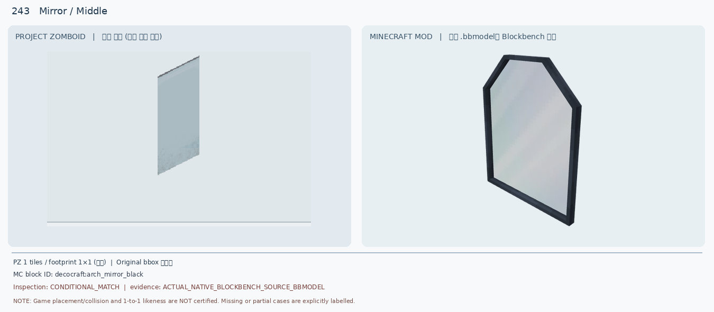
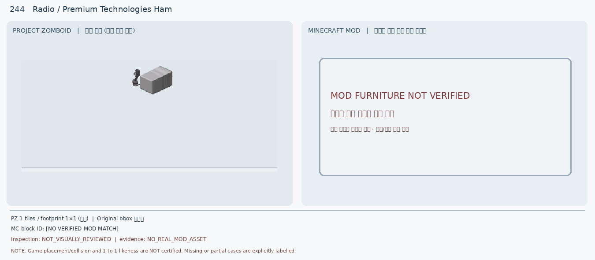
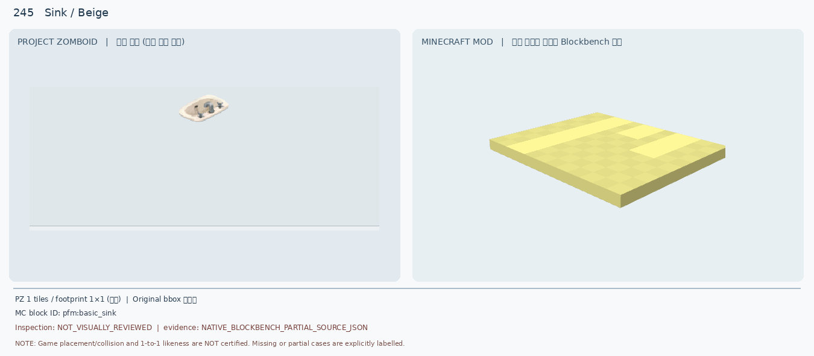
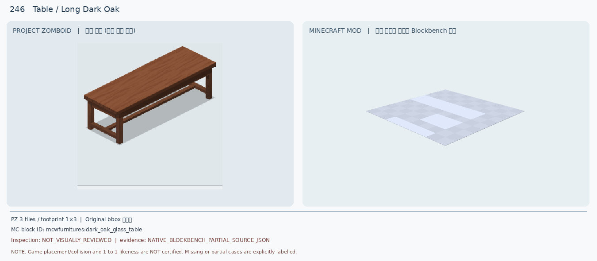
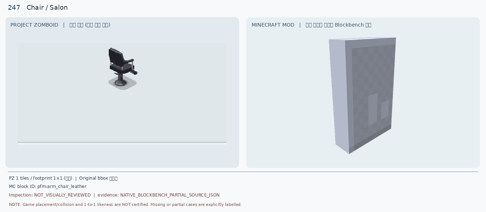
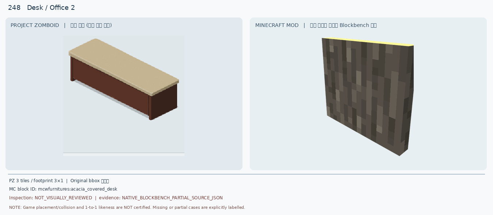
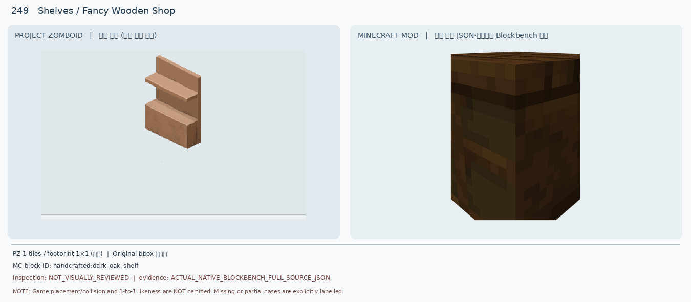
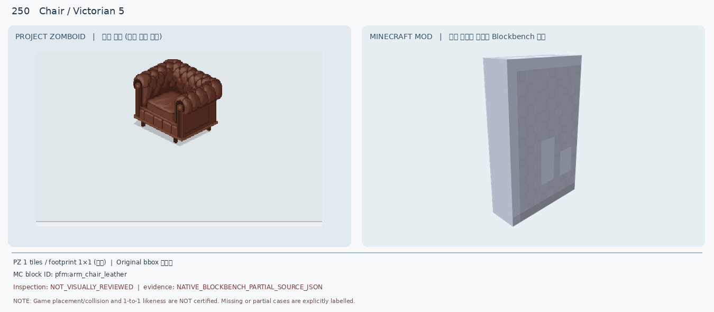

241 Fancy Dark Table /
DEFERRED · ACTUAL_NATIVE_BLOCKBENCH_FULL_SOURCE_JSON

table geometry and wood color absent
후속: Find actual dark square four-leg table
10종 모두 보류 · 실제 인게임 1:1 인증 0 · 기존 비교 이미지 재판독 (새 렌더 없음)
DEFERRED · ACTUAL_NATIVE_BLOCKBENCH_FULL_SOURCE_JSON
table geometry and wood color absent
후속: Find actual dark square four-leg table
DEFERRED · ACTUAL_NATIVE_BLOCKBENCH_SOURCE_BBMODEL

different appliance, shape, material, footprint and height
후속: Search industrial stainless commercial oven/bakery machine
DEFERRED · ACTUAL_NATIVE_BLOCKBENCH_SOURCE_BBMODEL

outline and frame strongly differ; downgrade prior conditional match
후속: Search unframed rectangular wall mirror
DEFERRED · NO_REAL_MOD_ASSET

missing actual MC asset; no visual comparison possible
후속: Search real ham radio or build verified custom model
DEFERRED · NATIVE_BLOCKBENCH_PARTIAL_SOURCE_JSON

partial import is not complete candidate evidence; no faithful sink shape
후속: Re-render complete textured sink and inspect basin/faucet
DEFERRED · NATIVE_BLOCKBENCH_PARTIAL_SOURCE_JSON

material and 1x3 footprint mismatch; partial source render
후속: Find 3-block wooden table with complete support frame
DEFERRED · NATIVE_BLOCKBENCH_PARTIAL_SOURCE_JSON

no chair seat, armrests or pedestal; partial model evidence
후속: Search black swivel salon/barber chair
DEFERRED · NATIVE_BLOCKBENCH_PARTIAL_SOURCE_JSON

missing 3x1 desk assembly, tabletop and cabinet; partial side segment
후속: Render left/middle/right desk states as complete 3x1 unit
DEFERRED · ACTUAL_NATIVE_BLOCKBENCH_FULL_SOURCE_JSON

open display geometry absent; major material/color mismatch
후속: Find light wood open retail display shelves
DEFERRED · NATIVE_BLOCKBENCH_PARTIAL_SOURCE_JSON

missing upholstery, arms, seat and wood trim; partial model evidence
후속: Search brown Chesterfield/Victorian armchair